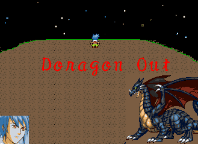
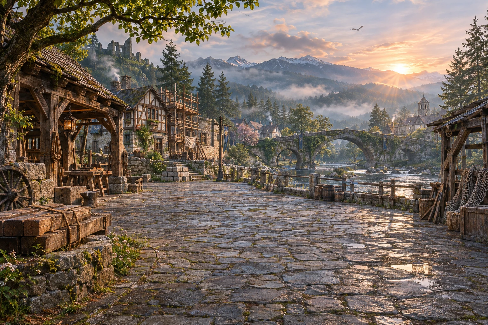

RPG MAKER 2003 · ORIGINAL MAP EDITION
あのマップを。
あの物語を、ブラウザで。
町の路地も、宝箱も、あの会話も。
原作のマップとイベントで、３つのDiskを旅しよう。
同じマップ・イベント・セーブで、主要６人の顔と対応する魔物画像を切り替えられます。
DORAGON OUTORIGINAL ARTWORK

ⅠⅡⅢ
公開版では、市販曲・権利未確認のBGMは無音に、一部の他作品由来の画像は代替素材に変更しています。原作のマップ・会話・イベントは保持しています。
OPENING / ENDING · 5:00
第１作品の物語を、映像で。
字幕・BGM付きムービー。エンディングには本編の結末を含みます。
CHRONICLES
冒険の記録
COMPANIONS
もう一度、仲間と。
ANOTHER WAY TO PLAY
新しい姿の、もうひとつの旅。
写実調のキャラクター、新しいバトル、５分間のムービー、討伐で埋まる魔物図鑑。ボス33戦と、選択で進む続編６章。
これまで制作したRE:CHRONICLEは、別の再構成版として遊べます。
原作マップ版と再構成版のセーブは別々に保存されます。原作マップ版の戦闘に自動図鑑登録は未対応です。

BONUS STORY
竜外の灯 — スタル再会祭
原作の結末から着想した６つの追加イベント。結末の内容を含みます。